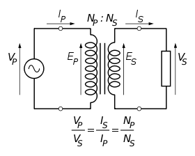

Cuando trabajamos con circuitos electrónicos, se requiere una necesidad básica que es proveer de una fuente eléctrica para que funcione. Si esta toma de energía, el circuito no servirá de nada. El propósito principal de una fuente de alimentación, es hacer entrega de una o más tensiones eléctricas que pueden ser variables al circuito, con la suficiente capacidad para mantener las condiciones de operación ideales. Hay muchos tipos de fuentes de alimentación, y pueden ser de tamaño y formas variadas. Se puede decir que todos los dispositivos electrónicos que conocemos tienen uno de estos aparatos integrados, desde nuestro televisor, microondas, hasta el ordenador que tenemos en casa.
Aunque cada fuente de alimentación tiene sus propias especificaciones y características individuales, todas ellas tienen ciertas cosas en común. Veremos las partes principales de las fuentes de alimentación y como funcionan todas juntas.
Una fuente de alimentación básica consiste en tres secciones básicas. Dependiendo de los requerimientos de cada dispositivo, las secciones pueden ser simples o extremadamente complejas. Cada parte sirve para un o más propósitos, y son los siguientes:
Transformador
En general, la corriente continua presente en las tomas de electricidad de nuestras casa, no es la adecuada para los circuitos electrónicos. Muchos de ellos necesitan un voltaje bastante menor, mientras que otros requieren que sea mayor. El transformador sirve para convertir la tensión AC (corriente alterna), a un nivel de voltaje más apropiado para las necesidades del circuito. Al mismo tiempo, también provee de aislamiento eléctrico entre la línea AC y el circuito que está siendo alimentado, lo cual es una consideración de seguridad importante.
Sin embargo, un transformador de línea es generalmente grande y pesado, y más bien caro. Por este motivo, algunas fuentes de alimentación (por ejemplo de los PCs), están diseñadas de forma deliberada para operar directamente desde la línea AC sin un transformador de línea. La salida del transformador sigue siendo un voltaje AC, pero con la magnitud apropiada para que el circuito pueda ser alimentado.

Rectifiador
El siguiente paso es forzar la corriente para que vaya en una dirección, previniendo alteraciones que ocurren en el transformador y la línea AC. Este proceso se conoce como rectificación, y el circuito que realiza la tarea es el rectificador. Hay configuraciones de rectificadores muy diferentes para ser usados en situaciones muy distintas, dependiendo de lo que requiera el circuito. La salida del rectificador en una voltaje DC (corriente continua), que todavía conserva algunas variaciones de la línea AC y el transformador.
Filtro
El voltaje DC del rectificador es generalmente no apropiado aun para dar carga al circuito. Es una tensión de pulsaciones que normalmente varían de cero voltios al pico de salida del transformador. Por ello, insertamos un circuito para almacenar energía durante cada pico de voltaje, y entonces liberarlo cuando ese pico vuelve a bajar. Este circuito se llama filtro, y su trabajo es reducir las pulsaciones del rectificador a un voltaje menor.
Cada una de los apartados que se han explicado tiene un número de variaciones, pero aparte de ellas, cumplen con las tareas que se les ha asignado. Sin embargo, algunos circuitos hacen su trabajo más efectivamente que otros. Para medir la efectividad de cada circuito, se compara la magnitud del componente AC resultante, con el componente DC del total del voltaje de salida. El promedio del voltaje AC al DC se conoce como factor “ripple”. La meta de cualquier fuente de alimentación es reducir este factor lo máximo posible, o al menos al punto donde la carga del circuito no se verá afectado por los restos de la corriente alterna.